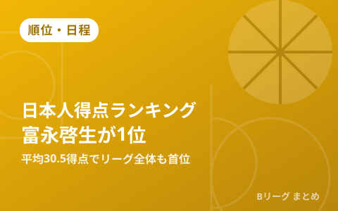

Bプレミア日本人得点ランキング、富永啓生がリーグ全体でも首位に 黒川虎徹・岡田侑大が続く

10月6日、バスケットボールキングが新リーグ「B.PREMIER（2026-27シーズン）」開幕2週目を終えた時点の日本人選手得点ランキングを報じました。レバンガ北海道の富永啓生が1試合平均30.5得点で日本人トップに立っただけでなく、外国籍選手も含めたリーグ全体の得点ランキングでも首位。アルティーリ千葉の黒川虎徹（18.5得点）、島根スサノオマジックの岡田侑大（17.5得点）が続いています。同日には10月4日の試合で記録された個人スタッツもあわせて紹介されました。
富永啓生が平均30.5得点でリーグ全体トップ、開幕戦は自己最多41得点
レバンガ北海道でBリーグ1年目を迎えた富永啓生が、日本人・外国籍選手を含めたB.PREMIER全体の得点ランキングで首位に立っています。開幕から1試合平均30.5得点を記録し、開幕戦のシーホース三河戦ではキャリアハイとなる41得点をマークしました。日本人選手がリーグ全体の得点ランキングトップに立つのは開幕2週目の時点で異例のハイペースです。
| 選手（所属） | 1試合平均得点 |
|---|---|
| 富永啓生（レバンガ北海道） | 30.5得点（リーグ全体1位） |
| 黒川虎徹（アルティーリ千葉） | 18.5得点 |
| 岡田侑大（島根スサノオマジック） | 17.5得点 |
2位黒川虎徹、3位岡田侑大 若手・移籍組の得点力も目立つ
2位に入った黒川虎徹は、アルティーリ千葉の中心選手として開幕から得点を重ねています。3位の岡田侑大は島根スサノオマジックのオフェンスを牽引する存在で、10月3日・4日の名古屋ダイヤモンドドルフィンズ戦（こちらの記事で詳報）でも二桁得点を記録するなど、開幕から安定した得点力を見せています。
10月4日の個人記録 A東京新加入が37得点、神戸は第4Qだけで3P5本
同日バスケットボールキングが報じた10月4日の個人記録まとめでは、アルバルク東京に新加入したキヨンテ・ジョンソンが37得点を記録し、この日のB.PREMIER最多得点となりました。アルバルク東京はこの試合を含む開幕4戦で3勝1敗と好調で、千葉ジェッツとの開幕戦では史上2度目のクアドラプルオーバータイムを演じています（詳細はこちらの記事）。また、神戸ストークスの小川麻斗は広島ドラゴンフライズとの対戦で第4クォーターだけで3ポイントシュートを5本沈め、同クォーター17得点・試合通算19得点を記録しました。
Q. B.PREMIERの個人スタッツはどこで確認できる？
A. 各クラブの公式サイトやB.LEAGUE公式のスタッツページで確認できます。本サイトでも開幕節以降の主な試合結果やスタッツを記事でまとめています。新リーグの概要はこちらの記事で整理しています。
出典：バスケットボールキング「【Bプレミア得点ランキング日本人トップ10】富永啓生がリーグでも首位…黒川虎徹、岡田侑大が続く」／バスケットボールキング「【10月4日のBプレミア最多記録】A東京の新戦力が37得点…小川麻斗は4Qだけで5本の3P」ほか
https://basketballking.jp/news/japan/20261006/636329.html
https://basketballking.jp/news/japan/20261006/636119.html